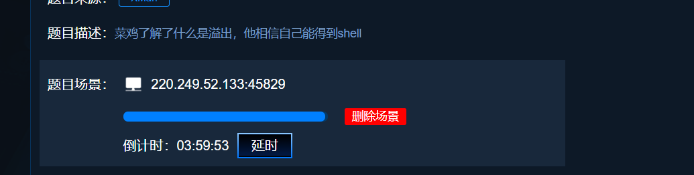

攻防世界pwn题目新手练习区level 0
1.下载附件
下载完成后使用ida pro打开
2.先找到main()函数点击进入后，按F5使汇编语言转换成伪代码。
3.分析这个程序
在main()函数里调用了一个vulnerable_function()函数，进入这个函数里面查看代码，发现使用了read()函数。
整个函数的功能是：
首先，定义一个字符指针buf，长度为 0x80。然后调用了read()函数，在返回read()函数的结果。
read()函数的作用是从第一个参数0所代表的文件读取字符，也就是用户输入的东西，读取
512个长度(第三个参数)，输出到buf所指的内存中。
然而，read()函数并没有检查输入字符的长度，当我们的输入字符大于buf指针的长度，就可以把后面指令的功能改变。
查看这个程序，我们发现在callsystem()函数中，有一个
system(“/bin/sh”)，这个函数可以帮助我们获取到与系统交互的壳，类似于Windows的cmd
于是，我们就有了一个思路了。写入超出buf指针长度的字符，然后在return返回时，返回执行callsystem()这个函数的地址，从而达到运行这个函数，获取到壳。
callsystem()函数地址为0x400506
4.编写payload
payload文件如下，文件名为adworld-fresh-man_level.py
1 | from pwn import * |
5.开始解题
获取在线场景

写payload
执行脚本
得到shell，使用ls查看文件后，发现flag且可以查看
参考资料：
- C语言中文网-C语言 read()函数